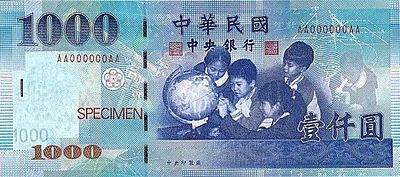

29 國家與認同
海蒂是不是瑞士人的爭論，映照台灣：語言、歷史與「我是誰」的長期張力。

瑞士聯邦憲法承認多種國語。他們是德國人還是瑞士人？我們是台灣人還是中國人？認同錯亂的結構相似，歷史淵源完全不同。
日本殖民五十年，偏鄉與原住民仍可能聽得懂日語；閩南、客家、戰後北京話層疊。我小時講台語會被罰；我的孩子若無阿公阿嬤，可能失去台語環境。
2010 年媒體轟動：學者暗示海蒂故事可能源自德國文本——瑞士人痛心。虛構人物的國籍，竟能刺痛真實的國族神經。
媽祖來自何方、國語是哪一種話、護照與內心自我指認是否一致：這些問題不會被一場選戰結束。
認同需要敘事，也需要生活。多語、多起源的國家不是缺陷，是瑞士證明過的可治理狀態——前提是制度承認複雜，而不是強迫單一。

來源: 台灣大未來 — 今日瑞士，明日台灣 — 張渝江 · 1. 瑞士與台灣 · 8. 國家與認同